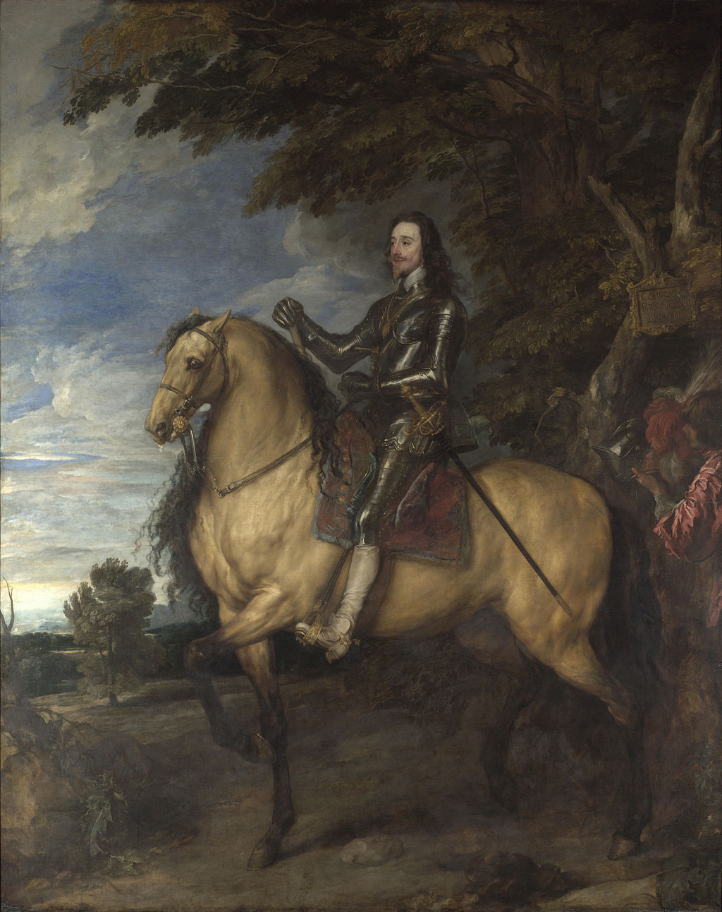

<head>
<meta charset="UTF-8" />
<meta name="keywords" content="drawing, painting" />
<meta name="description" content="drawings by Sunjy" />
<title>Sunjy</title>
<link rel="shortcut icon" type="image/x-icon" href="../../mImages/mCommon/favicon.ico" media="screen" />
<link rel="stylesheet" type="text/css" href="../../mCsses/mCommon/mCssA.css" />
<link rel="stylesheet" type="text/css" href="../../mCsses/mCommon/mCssB.css" />
<link rel="stylesheet" type="text/css" href="../../mCsses/mCommon/mCssC.css" />
<link rel="stylesheet" type="text/css" href="../../mCsses/mCommon/mCssD.css" />
<link rel="stylesheet" type="text/css" href="../../mCsses/mContent/mCssA.css" />
<link rel="stylesheet" type="text/css" href="../../mCsses/mContent/mCssB.css" />
<link rel="stylesheet" type="text/css" href="../../mCsses/mContent/mCssC.css" />
<link rel="stylesheet" type="text/css" href="../../mCsses/mContent/mCssD.css" />
</head>
<script type="text/javascript" src="../../mScripts/mContent/mContentAA.js" /></script>
<script type="text/javascript" src="../../mScripts/mContent/mContentAB.js" /></script>
<script type="text/javascript" src="../../mScripts/mContent/mContentAC.js" /></script>
<script type="text/javascript" src="../../mScripts/mContent/mContentAD.js" /></script>
<script type="text/javascript"></script> 
<script type="text/javascript">
document.write('<div class="mImgAbsolute"></div>');
/*
document.write('<p class="mFontSizeBColor" />From a white paper...</p>');
document.write('<table class="center"><tr><td>');
document.write('');
document.write('</td></tr></table>');
*/
</script>


<script type="text/javascript">
document.write('<p class="mFontSizeBColor" />Equestrian Portrait of Charles I</p>');
document.write('<p class="mFontSizeSColor" />“Equestrian Portrait of Charles I” by Anthony van Dyck glorifies Charles I on horseback after he becomes King of England, Scotland, and Ireland in 1625. The portrait was painted about 1637–38, only a few years before the English Civil War broke out.<br><br>Charles is depicted wearing his suit of armor, riding a heavily muscled horse with a peculiarly small head. To the right of the picture, a page is holding up the King’s helmet.<br><br>Van Dyck became the Charles’ Principal Painter in Ordinary in 1632, and he has painted Charles as a heroic philosopher king, carrying a baton of command, with a long sword and wearing the medallion of the Sovereign of the Order of the Garter.<br><br>His distant expression was designed to demonstrate wisdom. The tablet tied to a branch reads CAROLUS I REX MAGNAE BRITANIAE (Charles I King of Great Britain).<br><br>This was a political statement referring to the united crowns of Scotland and England.  Charles I, proclaimed himself King of Great Britain, and nearly 70 years before the Acts of Union legally created the Kingdom of Great Britain.<br><br>Anthony van Dyck was a Flemish Baroque artist who became the leading court painter in England, after enjoying great success in Italy and the Southern Netherlands.<br><br>He is most famous for his portraits of Charles I of England and his family and court, painted with a relaxed elegance that was to be the dominant influence on English portrait-painting for the next 150 years.<br><br>Charles I of England<br><br>Charles I (1600 – 1649) was monarch from 1625, and soon after his succession, Charles quarreled with the Parliament of England, which sought to curb his royal prerogative.<br><br>Charles believed in the divine right of kings and thought he could govern according to his conscience. Many of his subjects opposed his policies, which led to the English Civil War.<br><br>After his defeat in 1645, Charles refused to accept his captors’ demands for a constitutional monarchy and was tried, convicted, and executed for high treason in 1649.<br><br>The monarchy was abolished, and a republic called the Commonwealth of England was declared. The monarchy was later restored to Charles’s son, Charles II, in 1660.<br></p>');
document.write('<table class="center" /><tr><td>');
document.write('<br>Charles is depicted wearing his suit of armor, riding a heavily muscled horse with a peculiarly small head. To the right of the picture, a page is holding up the King’s helmet.<br><br>Van Dyck became the Charles’ Principal Painter in Ordinary in 1632, and he has painted Charles as a heroic philosopher king, carrying a baton of command, with a long sword and wearing the medallion of the Sovereign of the Order of the Garter.<br><br>His distant expression was designed to demonstrate wisdom. The tablet tied to a branch reads CAROLUS I REX MAGNAE BRITANIAE (Charles I King of Great Britain).<br><br>This was a political statement referring to the united crowns of Scotland and England.  Charles I, proclaimed himself King of Great Britain, and nearly 70 years before the Acts of Union legally created the Kingdom of Great Britain.<br><br>Anthony van Dyck was a Flemish Baroque artist who became the leading court painter in England, after enjoying great success in Italy and the Southern Netherlands.<br><br>He is most famous for his portraits of Charles I of England and his family and court, painted with a relaxed elegance that was to be the dominant influence on English portrait-painting for the next 150 years.<br><br>Charles I of England<br><br>Charles I (1600 – 1649) was monarch from 1625, and soon after his succession, Charles quarreled with the Parliament of England, which sought to curb his royal prerogative.<br><br>Charles believed in the divine right of kings and thought he could govern according to his conscience. Many of his subjects opposed his policies, which led to the English Civil War.<br><br>After his defeat in 1645, Charles refused to accept his captors’ demands for a constitutional monarchy and was tried, convicted, and executed for high treason in 1649.<br><br>The monarchy was abolished, and a republic called the Commonwealth of England was declared. The monarchy was later restored to Charles’s son, Charles II, in 1660.<br>" />');
document.write('</td></tr></table>');
</script>


